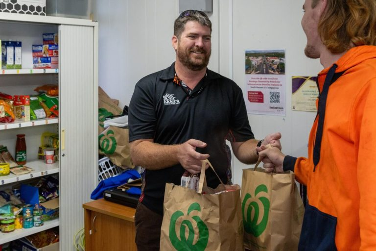
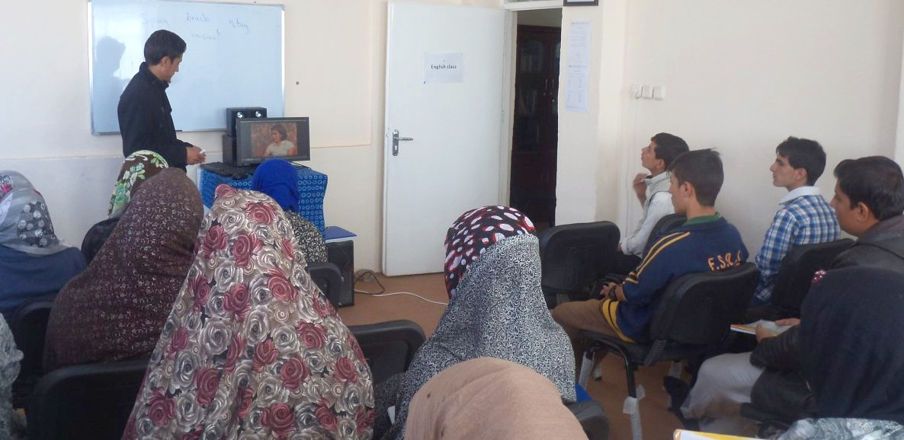

Thursday Community Day
Every Thursday, Hampton Park Uniting Place becomes a community hub. Our doors are open to all members of the community, and everything we offer is free of charge. No appointment is necessary — simply come along.
Every Thursday at 1 Coral Drive, Hampton Park
All activities are free. All people are welcome.
Free Community Lunch
Each Thursday at 12:30 pm we serve a free, home-cooked lunch for anyone who would like to join us. This is a place of genuine hospitality — a chance to share a meal, meet neighbours, and experience community. No questions asked, no requirements.
When: Thursdays, 12:30 pm
Where: 1 Coral Drive, Hampton Park
Cost: Free
Free Community Pantry

Our Community Pantry opens each Thursday morning and provides access to a range of essential grocery items at no cost. The pantry is available to anyone in the community who needs a helping hand.
When: Thursdays, 10:00 am
Where: 1 Coral Drive, Hampton Park
Cost: Free
Skills & Learning
We offer a range of free skill-building activities each Thursday, open to all community members:
Basic Computers
Learn to use a computer, browse the internet, send email, and more. Friendly, patient instruction for all levels.
Art & Craft
A relaxed creative space to explore painting, drawing, and craft in the company of others.
Introductory English
Friendly conversational English classes to help new arrivals build confidence in everyday communication.
Mindfulness
A gentle introduction to mindfulness practices to support wellbeing and reduce stress.
All classes are free and no bookings are required unless otherwise stated.
Introductory English

Our free Introductory English classes are designed to help new arrivals and community members build confidence in everyday English communication. Classes are friendly, relaxed, and welcoming to all levels of ability.
Whether you are just starting out or looking to improve your conversational skills, you will find a warm and supportive environment here.
When: Thursdays (during term)
Where: 1 Coral Drive, Hampton Park
Cost: Free
Mindfulness & Wellbeing

Our free Mindfulness and Wellbeing sessions offer a gentle introduction to mindfulness practices that can help reduce stress, improve focus, and support overall mental and emotional health.
Sessions are open to everyone and no prior experience is necessary. Simply come along with an open mind and a willingness to take a little time for yourself.
When: Thursdays
Where: 1 Coral Drive, Hampton Park
Cost: Free
Playgroup

Our Playgroup is a welcoming space for young children and their parents or carers to play, socialise, and connect. It is a great way to meet other families in the local area in a relaxed, friendly environment.
When: Thursdays (term time)
Where: 1 Coral Drive, Hampton Park
Cost: Free
Volunteer with Us
Our Thursday programs are made possible by a dedicated team of volunteers. If you would like to contribute your time and skills to supporting the Hampton Park community, we would love to hear from you.
Contact us to find out more ›